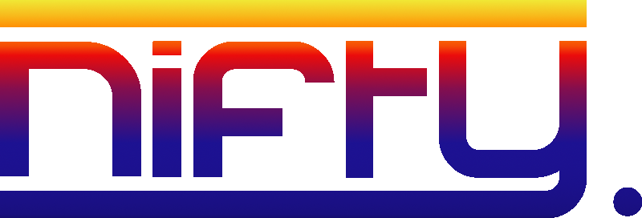

We are nifty., not only in the literal sense of the word, but rather in the context of: We are nifty., the development team behind Balls2TheWalls. This project was done for university purposes but is open for all to use.nifty. is Leonardo Salsi, Oliver Weinmeier, Nour Shokry and Tim Goppelsroeder.